6. Clients HTTP du service de calcul de l'impôt

6.1. Introduction
Nous nous proposons ici d’écrire un client [node.js] du service de calcul de l’impôt installé au chapitre Installation d’un serveur NestJS. L’architecture client / serveur sera la suivante :
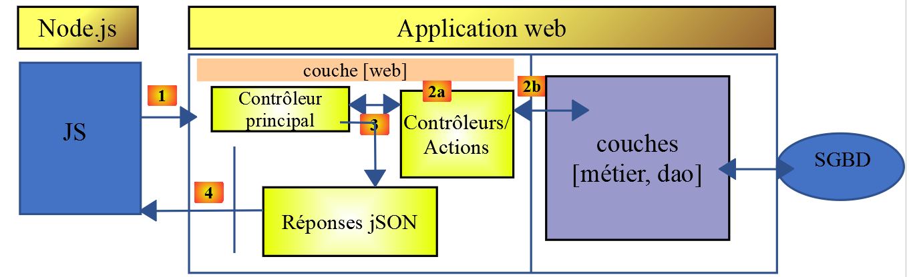
Nous étudierons deux versions du client :
- la version 1 du client aura la structure [main, dao] en couches suivante :
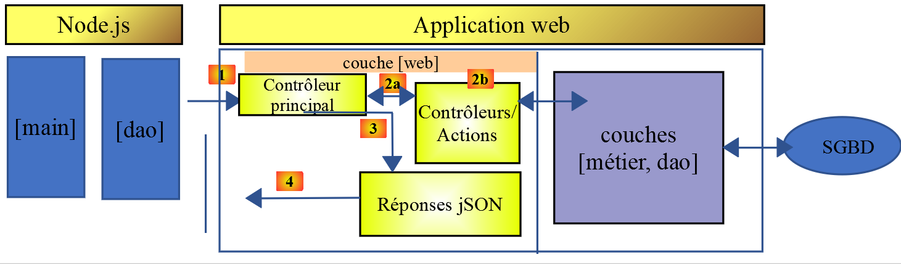
- la version 2 du client aura une structure [main, métier, dao]. La couche [métier] du serveur sera déportée sur le client :
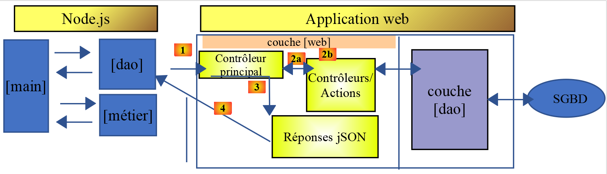
6.2. Client HTTP 1
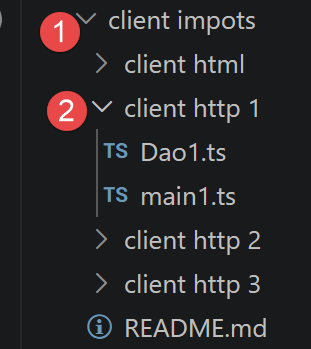
Comme nous l’avons dit, le client HTTP 1 implémente l’architecture client / serveur suivante :
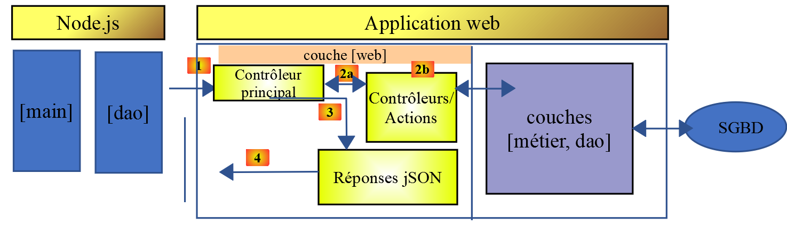
Nous implémenterons :
- la couche [dao] sous la forme d’une classe ;
- la couche [main] sous la forme d’un script utilisant cette classe ;
6.2.1. La couche [dao]
La couche [dao] sera implémentée par la classe suivante [Dao1.ts] :
'use strict';
// imports
import { AxiosInstance, AxiosRequestConfig, AxiosResponse } from 'axios';
import qs from 'qs'
class Dao1 {
private axios: AxiosInstance;
private sessionCookieName: string;
private sessionCookie: string;
// constructeur
constructor(axios: AxiosInstance) {
// bibliothèque axios pour faire les requêtes HTTP
this.axios = axios;
// cookie de session
this.sessionCookieName = "PHPSESSID";
this.sessionCookie = '';
}
// init session
async initSession(): Promise<any> {
// options de la requête HHTP [get /main.php?action=init-session&type=json]
const options: AxiosRequestConfig = {
// [mise à jour TypeScript] URL incluse dans [options.url] (voir getRemoteData)
url: 'main.php',
method: "GET",
// paramètres de l'URL
params: {
action: 'init-session',
type: 'json'
}
};
// exécution de la requête HTTP
return await this.getRemoteData(options);
}
async authentifierUtilisateur(user: string, password: string): Promise<any> {
// options de la requête HHTP [post /main.php?action=authentifier-utilisateur]
const options: AxiosRequestConfig = {
url: 'main.php',
method: "POST",
headers: {
'Content-type': 'application/x-www-form-urlencoded',
},
// corps du POST
data: qs.stringify({
user: user,
password: password
}),
// paramètres de l'URL
params: {
action: 'authentifier-utilisateur'
}
};
// exécution de la requête HTTP
return await this.getRemoteData(options);
}
// calcul de l'impôt
async calculerImpot(marié: string, enfants: number, salaire: number): Promise<any> {
// options de la requête HHTP
const options: AxiosRequestConfig = {
url: 'main.php',
method: "POST",
headers: {
'Content-type': 'application/x-www-form-urlencoded',
},
// corps du POST
data: qs.stringify({
marié: marié,
enfants: enfants,
salaire: salaire
}),
// paramètres de l'URL
params: {
action: 'calculer-impot'
}
};
// exécution de la requête HTTP
const data = await this.getRemoteData(options);
// résultat
return data;
}
// liste des simulations
async listeSimulations(): Promise<any> {
// options de la requête HHTP
const options: AxiosRequestConfig = {
url: 'main.php',
method: "GET",
// paramètres de l'URL
params: {
action: 'lister-simulations'
},
};
// exécution de la requête HTTP
const data = await this.getRemoteData(options);
// résultat
return data;
}
// supprimer une simulation
async supprimerSimulation(index: number): Promise<any> {
// options de la requête HHTP
const options: AxiosRequestConfig = {
url: 'main.php',
method: "GET",
// paramètres de l'URL
params: {
action: 'supprimer-simulation',
numéro: index
},
};
// exécution de la requête HTTP
const data = await this.getRemoteData(options);
// résultat
return data;
}
async getRemoteData(options: AxiosRequestConfig): Promise<any> {
// pour le cookie de session
if (!options.headers) {
options.headers = {} as any;
}
(options.headers as any).Cookie = this.sessionCookie;
// exécution de la requête HTTP
let response: AxiosResponse;
try {
// requête asynchrone
response = await this.axios.request(options);
} catch (error: any) {
// le paramètre [error] est une instance d'exception - elle peut avoir diverses formes
if (error.response) {
// la réponse du serveur est dans [error.response]
response = error.response;
} else {
// on relance l'erreur
throw error;
}
}
// response est l'ensemble de la réponse HTTP du serveur (entêtes HTTP + réponse elle-même)
// on récupère le cookie de session s'il existe
const setCookie = response.headers['set-cookie'];
if (setCookie) {
// setCookie est un tableau
// on cherche le cookie de session dans ce tableau
let trouvé = false;
let i = 0;
while (!trouvé && i < setCookie.length) {
// on cherche le cookie de session
const results = RegExp('^(' + this.sessionCookieName + '.+?);').exec(setCookie[i]);
if (results) {
// on mémorise le cookie de session
// eslint-disable-next-line require-atomic-updates
this.sessionCookie = results[1];
// on a trouvé
trouvé = true;
} else {
// élément suivant
i++;
}
}
}
// la réponse du serveur est dans [response.data]
return response.data;
}
}
// export de la classe
export default Dao1;
- nous utilisons ici ce que nous avons appris dans le chapitre Les fonctions HTTP de TypeScript ;
- lignes 14-20 : le constructeur de la classe. Celle-ci aura trois propriétés :
- [axios] : l’objet [axios] permettant de faire les requêtes HTTP. Celui-ci est transmis par le code appelant ;
- [sessionCookieName] : selon les serveurs, le cookie de session porte des noms différents. Ici, c’est [PHPSESSID] ;
- [sessionCookie] : le cookie de session envoyé par le serveur et mémorisé par le client ;
- lignes 62-85 : la fonction asynchrone [calculerImpot] fait la requête [post /main.php?action=calculer-impot] en postant les paramètres [marié, enfants, salaire]. Elle rend la chaîne jSON transmise par le serveur sous la forme d’un objet Javascript ;
- lignes 88-102 : la fonction asynchrone [listeSimulations] fait la requête [get /main.php?action=lister-simulations]. Elle rend la chaîne jSON transmise par le serveur sous la forme d’un objet Javascript ;
- lignes 105-120 : la fonction asynchrone [supprimerSimulation] fait la requête [get /main.php?action=supprimer-simulation&numéro=index]. Elle rend la chaîne jSON transmise par le serveur sous la forme d’un objet Javascript ;
- ligne 132 : on utilise la notation [this.axios] car ici, l’objet [axios] transmis au constructeur a été mémorisé dans la propriété [this.axios] (ligne 9) ;
- ligne 172 : la classe [Dao1] est exportée pour pouvoir être utilisée ;
6.2.2. Le script [main1]
Ce script enchaîne une série d'appels au serveur via la classe Dao1 : initialisation de session, authentification, trois calculs d'impôt (en parallèle), liste des simulations, suppression de l'une d'elles :
// import axios
import axios from 'axios';
// import de la classe Dao
import Dao from './Dao1.js';
// fonction asynchrone [main]
async function main(): Promise<void> {
// configuration axios
axios.defaults.timeout = 2000;
axios.defaults.baseURL = 'http://localhost:3000';
// instanciation couche [dao]
const dao = new Dao(axios);
// utilisation de la couche [dao]
try {
// init session
log("-----------init-session");
let response = await dao.initSession();
log(response);
// authentification
log("-----------authentifier-utilisateur");
response = await dao.authentifierUtilisateur("admin", "admin");
log(response);
// calculs d'impôt
log("-----------calculer-impot x 3");
response = await Promise.all([
dao.calculerImpot("oui", 2, 45000),
dao.calculerImpot("non", 2, 45000),
dao.calculerImpot("non", 1, 30000)
]);
log(response);
// liste des simulations
log("-----------liste-des-simulations");
response = await dao.listeSimulations();
log(response);
// suppression d'une simulation
log("-----------suppression simulation n° 1");
response = await dao.supprimerSimulation(1);
log(response);
} catch (error: any) {
// on logue l'erreur
console.log("erreur=", error.message);
}
}
// log jSON
function log(object: unknown): void {
console.log(JSON.stringify(object, null, 2));
}
// exécution
main();
Commentaires
- ligne 3 : on importe la bibliothèque [axios] ;
- ligne 5 : on importe la classe [Dao] ;
- ligne 9 : la fonction [main] qui dialogue avec le serveur est asynchrone ;
- lignes 11-12 : configuration par défaut des requêtes HTTP qui seront faites au serveur :
- ligne 9 : [timeout] de 2 secondes ;
- ligne 10 : toutes les URL ont pour préfixe, l’URL base du serveur web de Laragon ;
- ligne 14 : la couche [Dao] est construite. On peut désormais l’utiliser ;
- lignes 48-50 : la fonction [log] a pour objet d’afficher la chaîne jSON d’un objet Javascript sous une forme embellie : sous forme verticale avec une indentation de deux espaces (3ième paramètre) ;
- lignes 17-20 : initialisation de la session jSON ;
- lignes 21-24 : authentification ;
- lignes 25-32 : trois calculs d’impôt sont demandés en parallèle. Grâce à [await Promise.all], l’exécution est bloquée tant que les trois résultats n’ont pas été tous obtenus ;
- lignes 33-36 : liste des simulations ;
- lignes 37-40 : suppression d’une simulation ;
- lignes 41-44 : gestion de l’éventuelle exception ;
Les résultats de l’exécution sont les suivants :
Résultat de l'exécution :
1 2 3 4 5 6 7 8 9 10 11 12 13 14 15 16 17 18 19 20 21 22 23 24 25 26 27 28 29 30 31 32 33 34 35 36 37 38 39 40 41 42 43 44 45 46 47 48 49 50 51 52 53 54 55 56 57 58 59 60 61 62 63 64 65 66 67 68 69 70 71 72 73 74 75 76 77 78 79 80 81 82 83 84 85 86 87 88 89 90 91 92 93 94 95 96 97 98 99 100 101 102 103 104 105 106 107 108 109 110 111 112 113 114 115 116 117 118 119 120 121 | |
6.3. Client HTTP 2

L’architecture du client HTTP2 est la suivante :
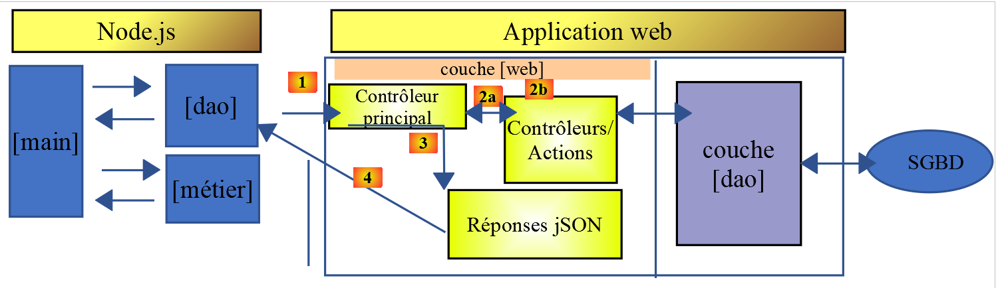
On a déporté la couche [métier] du serveur vers le client Javascript. La couche [main] n’aura pas ici à passer par la couche [métier] pour atteindre la couche [dao]. Nous utiliserons ces deux couches comme des centres de compétences :
- la couche [main] passe par la couche [dao] dès qu’elle a besoin de données qui sont sur le serveur ;
- la couche [main] demande à la couche [métier] de faire les calculs de l’impôt ;
- la couche [métier] est indépendante de la couche [dao] et ne fait jamais appel à elle ;
6.3.1. La classe [Métier]
La logique de calcul de l'impôt suit fidèlement celle de la classe PHP Metier du cours « Introduction au langage PHP7 par l'exemple » — nous ne la détaillons pas de nouveau ici, seule sa traduction en TypeScript nous intéresse :
'use strict';
// classe Métier
class Métier {
// [any] : la structure exacte des données envoyées par le serveur fiscal (taux, plafonds, ...)
// n'est pas documentée ici ; on reste donc volontairement souple sur ce type
taxAdminData: any;
// constructeur
constructor(taxAdmindata: any) {
// this.taxAdminData : données de l'administration fiscale
this.taxAdminData = taxAdmindata;
}
// calcul de l'impôt
// --------------------------------------------------------------------------
calculerImpot(marié: string, enfants: number, salaire: number): any {
// marié : oui, non
// enfants : nombre d'enfants
// salaire : salaire annuel
// this.taxAdminData : données de l'administration fiscale
//
// calcul de l'impôt avec enfants
const result1 = this.calculerImpot2(marié, enfants, salaire);
const impot1 = result1["impôt"];
// calcul de l'impôt sans les enfants
let result2, impot2, plafondDemiPart;
if (enfants !== 0) {
result2 = this.calculerImpot2(marié, 0, salaire);
impot2 = result2["impôt"];
// application du plafonnement du quotient familial
plafondDemiPart = this.taxAdminData.plafondQfDemiPart;
if (enfants < 3) {
// PLAFOND_QF_DEMI_PART euros pour les 2 premiers enfants
impot2 = impot2 - enfants * plafondDemiPart;
} else {
// PLAFOND_QF_DEMI_PART euros pour les 2 premiers enfants, le double pour les suivants
impot2 = impot2 - 2 * plafondDemiPart - (enfants - 2) * 2 * plafondDemiPart;
}
} else {
// pas de reclacul de l'impôt
impot2 = impot1;
result2 = result1;
}
// on prend l'impôt le plus fortdans [impot1, impot2]
let impot, taux, surcôte;
if (impot1 > impot2) {
impot = impot1;
taux = result1["taux"];
surcôte = result1["surcôte"];
} else {
surcôte = impot2 - impot1 + result2["surcôte"];
impot = impot2;
taux = result2["taux"];
}
// calcul d'une éventuelle décôte
const décôte = this.getDecôte(marié, impot);
impot -= décôte;
// calcul d'une éventuelle réduction d'impôts
const réduction = this.getRéduction(marié, salaire, enfants, impot);
impot -= réduction;
// résultat
return {
"impôt": Math.floor(impot), "surcôte": surcôte, "décôte": décôte, "réduction": réduction,
"taux": taux
};
}
// --------------------------------------------------------------------------
calculerImpot2(marié: string, enfants: number, salaire: number): any {
// marié : oui, non
// enfants : nombre d'enfants
// salaire : salaire annuel
// this->taxAdminData : données de l'administration fiscale
//
// nombre de parts
marié = marié.toLowerCase();
let nbParts;
if (marié === "oui") {
nbParts = enfants / 2 + 2;
} else {
nbParts = enfants / 2 + 1;
}
// 1 part par enfant à partir du 3ième
if (enfants >= 3) {
// une demi-part de + pour chaque enfant à partir du 3ième
nbParts += 0.5 * (enfants - 2);
}
// revenu imposable
const revenuImposable = this.getRevenuImposable(salaire);
// surcôte
let surcôte = Math.floor(revenuImposable - 0.9 * salaire);
// pour des pbs d'arrondi
if (surcôte < 0) {
surcôte = 0;
}
// quotient familial
const quotient = revenuImposable / nbParts;
// calcul de l'impôt
const limites = this.taxAdminData.limites;
const coeffR = this.taxAdminData.coeffR;
const coeffN = this.taxAdminData.coeffN;
// est mis à la fin du tableau limites pour arrêter la boucle qui suit
limites[limites.length - 1] = quotient;
// recherche du taux d'imposition
let i = 0;
while (quotient > limites[i]) {
i++;
}
// du fait qu'on a placé quotient à la fin du tableau limites, la boucle précédente
// ne peut déborder du tableau limites
// maintenant on peut calculer l'impôt
const impôt = Math.floor(revenuImposable * coeffR[i] - nbParts * coeffN[i]);
// résultat
return { "impôt": impôt, "surcôte": surcôte, "taux": coeffR[i] };
}
// revenuImposable=salaireAnnuel-abattement
// l'abattement a un min et un max
getRevenuImposable(salaire: number): number {
// abattement de 10% du salaire
let abattement = 0.1 * salaire;
// cet abattement ne peut dépasser taxAdminData.getAbattementDixPourCentMax()
if (abattement > this.taxAdminData.abattementDixPourcentMax) {
abattement = this.taxAdminData.abattementDixPourcentMax;
}
// l'abattement ne peut être inférieur à taxAdminData.getAbattementDixPourcentMin()
if (abattement < this.taxAdminData.abattementDixPourcentMin) {
abattement = this.taxAdminData.abattementDixPourcentMin;
}
// revenu imposable
const revenuImposable = salaire - abattement;
// résultat
return Math.floor(revenuImposable);
}
// calcule une décôte éventuelle
getDecôte(marié: string, impots: number): number {
// au départ, une décôte nulle
let décôte = 0;
// montant maximal d'impôt pour avoir la décôte
let plafondImpôtPourDécôte = marié === "oui" ?
this.taxAdminData.plafondImpotCouplePourDecote :
this.taxAdminData.plafondImpotCelibatairePourDecote;
let plafondDécôte;
if (impots < plafondImpôtPourDécôte) {
// montant maximal de la décôte
plafondDécôte = marié === "oui" ?
this.taxAdminData.plafondDecoteCouple :
this.taxAdminData.plafondDecoteCelibataire;
// décôte théorique
décôte = plafondDécôte - 0.75 * impots;
// la décôte ne peut dépasser le montant de l'impôt
if (décôte > impots) {
décôte = impots;
}
// pas de décôte <0
if (décôte < 0) {
décôte = 0;
}
}
// résultat
return Math.ceil(décôte);
}
// calcule une réduction éventuelle
getRéduction(marié: string, salaire: number, enfants: number, impots: number): number {
// le plafond des revenus pour avoir droit à la réduction de 20%
let plafondRevenuPourRéduction = marié === "oui" ?
this.taxAdminData.plafondRevenusCouplePourReduction :
this.taxAdminData.plafondRevenusCelibatairePourReduction;
plafondRevenuPourRéduction += enfants * this.taxAdminData.valeurReducDemiPart;
if (enfants > 2) {
plafondRevenuPourRéduction += (enfants - 2) * this.taxAdminData.valeurReducDemiPart;
}
// revenu imposable
const revenuImposable = this.getRevenuImposable(salaire);
// réduction
let réduction = 0;
if (revenuImposable < plafondRevenuPourRéduction) {
// réduction de 20%
réduction = 0.2 * impots;
}
// résultat
return Math.ceil(réduction);
}
}
// export de la classe
export default Métier;
- ligne 8 : taxAdminData: any — la structure exacte des données envoyées par le serveur fiscal (taux, plafonds...) n'est pas documentée ; on reste donc volontairement souple sur ce type plutôt que d'en deviner une interface incertaine ;
- la classe [Métier] est exportée, ligne 191 ;
6.3.2. La classe [Dao2]
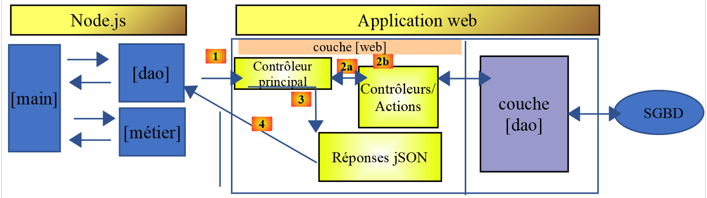
La classe [Dao2] implémente la couche [dao] du client Javascript ci-dessus de la façon suivante :
'use strict';
// imports
import { AxiosInstance, AxiosRequestConfig, AxiosResponse } from 'axios';
import qs from 'qs'
class Dao2 {
private axios: AxiosInstance;
private sessionCookieName: string;
private sessionCookie: string;
// constructeur
constructor(axios: AxiosInstance) {
this.axios = axios;
// cookie de session
this.sessionCookieName = "PHPSESSID";
this.sessionCookie = '';
}
// init session
async initSession(): Promise<any> {
// options de la requête HHTP [get /main.php?action=init-session&type=json]
const options: AxiosRequestConfig = {
url: 'main.php',
method: "GET",
// paramètres de l'URL
params: {
action: 'init-session',
type: 'json'
}
};
// exécution de la requête HTTP
return await this.getRemoteData(options);
}
async authentifierUtilisateur(user: string, password: string): Promise<any> {
// options de la requête HHTP [post /main.php?action=authentifier-utilisateur]
const options: AxiosRequestConfig = {
url: 'main.php',
method: "POST",
headers: {
'Content-type': 'application/x-www-form-urlencoded',
},
// corps du POST
data: qs.stringify({
user: user,
password: password
}),
// paramètres de l'URL
params: {
action: 'authentifier-utilisateur'
}
};
// exécution de la requête HTTP
return await this.getRemoteData(options);
}
async getAdminData(): Promise<any> {
// options de la requête HHTP [get /main.php?action=get-admindata]
const options: AxiosRequestConfig = {
url: 'main.php',
method: "GET",
// paramètres de l'URL
params: {
action: 'get-admindata'
}
};
// exécution de la requête HTTP
const data = await this.getRemoteData(options);
// résultat
return data;
}
async getRemoteData(options: AxiosRequestConfig): Promise<any> {
// pour le cookie de session
if (!options.headers) {
options.headers = {} as any;
}
(options.headers as any).Cookie = this.sessionCookie;
// exécution de la requête HTTP
let response: AxiosResponse;
try {
// requête asynchrone
response = await this.axios.request(options);
} catch (error: any) {
// le paramètre [error] est une instance d'exception - elle peut avoir diverses formes
if (error.response) {
// la réponse du serveur est dans [error.response]
response = error.response;
} else {
// on relance l'erreur
throw error;
}
}
// response est l'ensemble de la réponse HTTP du serveur (entêtes HTTP + réponse elle-même)
// on récupère le cookie de session s'il existe
const setCookie = response.headers['set-cookie'];
if (setCookie) {
// setCookie est un tableau
// on cherche le cookie de session dans ce tableau
let trouvé = false;
let i = 0;
while (!trouvé && i < setCookie.length) {
// on cherche le cookie de session
const results = RegExp('^(' + this.sessionCookieName + '.+?);').exec(setCookie[i]);
if (results) {
// on mémorise le cookie de session
// eslint-disable-next-line require-atomic-updates
this.sessionCookie = results[1];
// on a trouvé
trouvé = true;
} else {
// élément suivant
i++;
}
}
}
// la réponse du serveur est dans [response.data]
return response.data;
}
}
// export de la classe
export default Dao2;
Commentaires
- la classe [Dao2] n’implémente que trois des requêtes possibles vers le serveur de calcul d’impôt :
- [init-session] (lignes 21-35) : pour initialiser la session jSON ;
- [authentifier-utilisateur] (lignes 37-57) : pour s’authentifier ;
- [get-admindata] (lignes 59-73) : pour avoir les données de l’administration fiscale qui vont permettre de faire les calculs de l’impôt, côté client ;
Nous montrons maintenant avec Postman (cf paragraphe Erreur : source de la référence non trouvée) comment fonctionne l’action [[get-admindata]. Si vous ne l’avez pas encore fait, importez (Ctrl-O) dans POSTMAN la collection de requêtes HTTP stockées dans le fichier [impots-servers-tests.postman_collection.json] dans le dossier [php_server] :
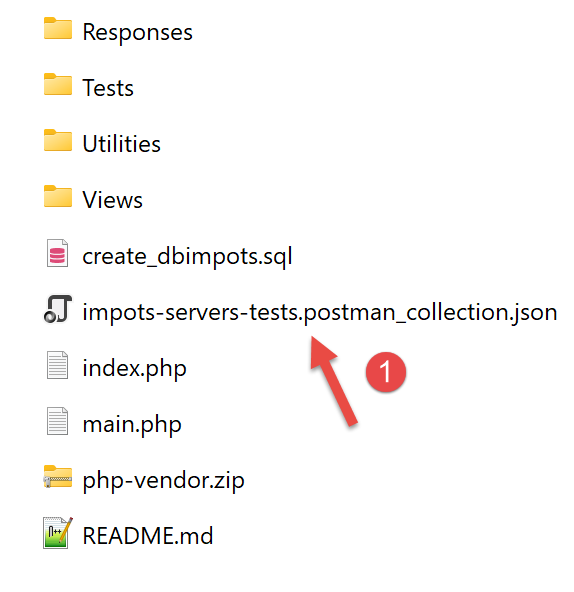 | 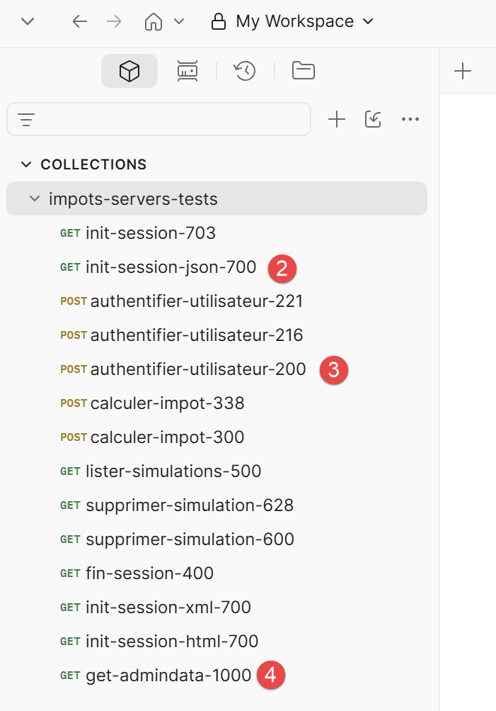 |
Puis exécutez dans l’ordre les trois requêtes [2-4] ci-dessus.
La requête [4] est la suivante :
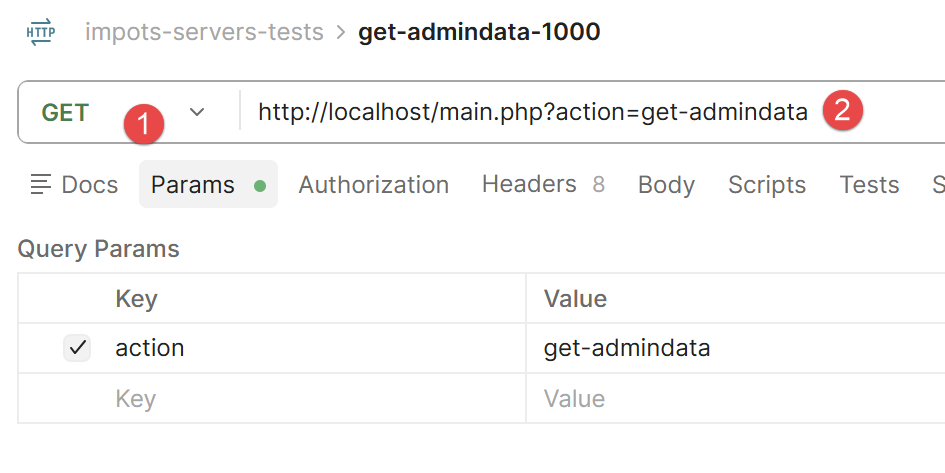 |
Le résultat ce cette requête est la suivante :
{
"action": "get-admindata",
"état": 1000,
"réponse": {
"limites": [
9964,
27519,
73779,
156244,
0,
9964,
27519,
73779,
156244,
0
],
"coeffR": [
0,
0.14,
0.3,
0.41,
0.45,
0,
0.14,
0.3,
0.41,
0.45
],
"coeffN": [
0,
1394.96,
5798,
13913.69,
20163.45,
0,
1394.96,
5798,
13913.69,
20163.45
],
"plafondQfDemiPart": "1551.00",
"plafondRevenusCelibatairePourReduction": "21037.00",
"plafondRevenusCouplePourReduction": "42074.00",
"valeurReducDemiPart": "3797.00",
"plafondDecoteCelibataire": "1196.00",
"plafondDecoteCouple": "1970.00",
"plafondImpotCouplePourDecote": "2627.00",
"plafondImpotCelibatairePourDecote": "1595.00",
"abattementDixPourcentMax": "12502.00",
"abattementDixPourcentMin": "437.00"
}
}
On a sous forme jSON le contenu des deux tables de la base de données.
6.3.3. Le script [main2]
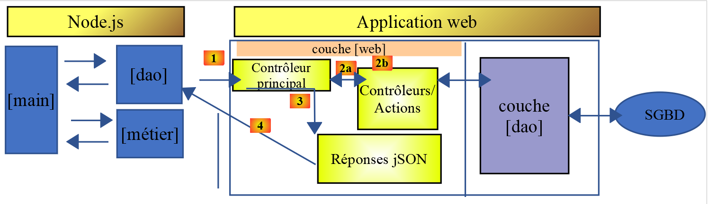
Ce script initialise la session, s'authentifie, récupère les données fiscales, puis effectue localement les calculs d'impôt via la couche métier — ces calculs ne sollicitent plus le serveur :
// imports
import axios from 'axios';
// imports
import Dao from './Dao2.js';
import Métier from './Metier.js';
// fonction asynchrone [main]
async function main(): Promise<void> {
// configuration axios
axios.defaults.timeout = 2000;
axios.defaults.baseURL = 'http://localhost';
// instanciation couche [dao]
const dao = new Dao(axios);
// requêtes HTTP
let taxAdminData: any;
try {
// init session
log("-----------init-session");
let response = await dao.initSession();
log(response);
// authentification
log("-----------authentifier-utilisateur");
response = await dao.authentifierUtilisateur("admin", "admin");
log(response);
// données fiscales
log("-----------get-admindata");
response = await dao.getAdminData();
log(response);
taxAdminData = response.réponse;
} catch (error: any) {
// on logue l'erreur
console.log("erreur=", error.message);
// fin
return;
}
// instanciation couche [métier]
const métier = new Métier(taxAdminData);
// calculs d'impôt
log("-----------calculer-impot x 3");
const simulations: any[] = [];
simulations.push(métier.calculerImpot("oui", 2, 45000));
simulations.push(métier.calculerImpot("non", 2, 45000));
simulations.push(métier.calculerImpot("non", 1, 30000));
// liste des simulations
log("-----------liste-des-simulations");
log(simulations);
// suppression d'une simulation
log("-----------suppression simulation n° 1");
simulations.splice(1, 1);
log(simulations);
}
// log jSON
function log(object: unknown): void {
console.log(JSON.stringify(object, null, 2));
}
// exécution
main();
- ligne 30 : taxAdminData = response.réponse — les données fiscales, reçues une seule fois du serveur, sont ensuite réutilisées localement pour tous les calculs ;
- ligne 39 : const métier = new Métier(taxAdminData) — la couche métier est instanciée avec ces données, sans jamais solliciter à nouveau le réseau ;
- lignes 44-46 : les trois calculs d'impôt sont désormais synchrones, exécutés directement dans le navigateur ou node.js, sans passer par le serveur.
Résultat de l'exécution :
"-----------init-session"
{
"action": "init-session",
"état": 700,
"réponse": "session démarrée avec type [json]"
}
"-----------authentifier-utilisateur"
{
"action": "authentifier-utilisateur",
"état": 200,
"réponse": "Authentification réussie [admin, admin]"
}
"-----------get-admindata"
{
"action": "get-admindata",
"état": 1000,
"réponse": {
"limites": [
9964,
27519,
73779,
156244,
0,
9964,
27519,
73779,
156244,
0
],
"coeffR": [
0,
0.14,
0.3,
0.41,
0.45,
0,
0.14,
0.3,
0.41,
0.45
],
"coeffN": [
0,
1394.96,
5798,
13913.69,
20163.45,
0,
1394.96,
5798,
13913.69,
20163.45
],
"plafondQfDemiPart": "1551.00",
"plafondRevenusCelibatairePourReduction": "21037.00",
"plafondRevenusCouplePourReduction": "42074.00",
"valeurReducDemiPart": "3797.00",
"plafondDecoteCelibataire": "1196.00",
"plafondDecoteCouple": "1970.00",
"plafondImpotCouplePourDecote": "2627.00",
"plafondImpotCelibatairePourDecote": "1595.00",
"abattementDixPourcentMax": "12502.00",
"abattementDixPourcentMin": "437.00"
}
}
"-----------calculer-impot x 3"
"-----------liste-des-simulations"
[
{
"impôt": 502,
"surcôte": 0,
"décôte": 857,
"réduction": 126,
"taux": 0.14
},
{
"impôt": 3250,
"surcôte": 370,
"décôte": 0,
"réduction": 0,
"taux": 0.3
},
{
"impôt": 1687,
"surcôte": 0,
"décôte": 0,
"réduction": 0,
"taux": 0.14
}
]
"-----------suppression simulation n° 1"
[
{
"impôt": 502,
"surcôte": 0,
"décôte": 857,
"réduction": 126,
"taux": 0.14
},
{
"impôt": 1687,
"surcôte": 0,
"décôte": 0,
"réduction": 0,
"taux": 0.14
}
]
6.4. Client HTTP 3
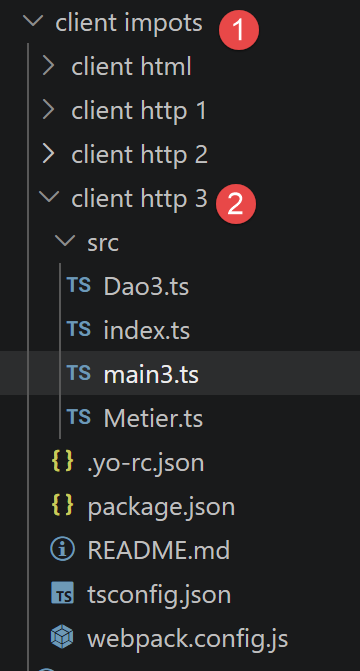 |
Dans cette section, nous portons l’application [Client HTTP 2] dans un navigateur selon l’architecture suivane :

Si [node.js] exécute nativement du TypeScript via tsx, ce n'est pas le cas des navigateurs : il faut un outil qui compile le TypeScript en JavaScript, puis assemble l'ensemble en un seul fichier exploitable par une page HTML. C'est le rôle de [webpack].
Note : L’opération [1] ci-dessus sera une requête HTTP générée par le code Javascript d’une page HTML. Nous allons voir prochainement que cette page HTML est obtenue via l’URL [http://localhost:8080] ou (8081), demandée à un serveur interne lancé par [webpack]. Le serveur de calcul de l’impôt, lui, est une application NestJS lancée par l’URL [http://localhost:3000] (voir Installation d’un serveur NestJS). Nous avons donc là, deux applications web qui se parlent, toutes deux obtenues depuis [http://localhost] mais pas depuis le même port. On dit qu’elles n’ont pas le même domaine. Ce type de requêtes entre deux applications web n’appartenant pas au même domaine est contrôlé. Par défaut, le serveur NestJS refusera les requêtes d’un client web, si celui-ci n’a pas la même origine que lui, ç-à-d [http://localhost:3000]. Cependant il est possible de configurer le serveur NestJS pour qu’il accepte ces requêtes dites “inter-domaines”. Cela a été fait ici. C’est pour cette raison que le client Javascript présenté ci-après, fonctionnera. Vous pouvez voir la configuration du serveur NestJS au chapitre Étude de cas : le serveur de calcul de l'impôt en NestJS, pour qu’il accepte les requêtes inter-domaines.
6.4.1. Évolution de l'outillage depuis 2019
Le document original (2019) utilisait [babel-loader] pour transpiler le code ES6 vers de l'ES5 compatible avec les anciens navigateurs. Notre projet étant désormais écrit en TypeScript, nous remplaçons babel-loader par [ts-loader], qui comprend nativement la syntaxe TypeScript (types, interfaces...) — chose que Babel ignore totalement.
Le fichier [webpack.config.js] du projet (dossier client impots/client http 3) configure le module [webpack]:
/* eslint-disable */
const path = require("path");
const webpack = require("webpack");
/*
* SplitChunksPlugin is enabled by default and replaced
* deprecated CommonsChunkPlugin. It automatically identifies modules which
* should be splitted of chunk by heuristics using module duplication count and
* module category (i. e. node_modules). And splits the chunks…
*
* It is safe to remove "splitChunks" from the generated configuration
* and was added as an educational example.
*
* https://webpack.js.org/plugins/split-chunks-plugin/
*
*/
const HtmlWebpackPlugin = require("html-webpack-plugin");
/*
* We've enabled HtmlWebpackPlugin for you! This generates a html
* page for you when you compile webpack, which will make you start
* developing and prototyping faster.
*
* https://github.com/jantimon/html-webpack-plugin
*
*/
// [mise à jour TypeScript] les sources sont maintenant en .ts : webpack doit les
// résoudre (resolve.extensions) et les compiler avec [ts-loader] à la place de
// [babel-loader] (qui ne comprend pas la syntaxe TypeScript : types, interfaces, ...)
module.exports = {
mode: "development",
//entry: "./src/main3.ts",
entry: "./src/index.ts",
output: {
filename: "[name].[chunkhash].js",
path: path.resolve(__dirname, "dist")
},
resolve: {
extensions: [".ts", ".js"]
},
plugins: [new webpack.ProgressPlugin(), new HtmlWebpackPlugin()],
module: {
rules: [
{
test: /\.ts$/,
include: [path.resolve(__dirname, "src")],
loader: "ts-loader"
}
]
},
optimization: {
splitChunks: {
cacheGroups: {
vendors: {
priority: -10,
test: /[\\/]node_modules[\\/]/
}
},
chunks: "async",
minChunks: 1,
minSize: 30000,
name: true
}
},
devServer: {
open: true
}
};
- ligne 36 : entry: "./src/index.ts" — webpack part de ce fichier et suit tous ses imports pour construire le bundle final ;
- lignes 42-44 : resolve: { extensions: [".ts", ".js"] } — indique à webpack de résoudre aussi les fichiers .ts sans que l'extension soit précisée dans les imports ;
- lignes 48-56 : la règle qui associe tout fichier .ts du dossier src au chargeur [ts-loader] — c'est le remplacement direct de babel-loader évoqué plus haut.
Le contenu du fichier [./src/index.ts] est le suivant :
console.log("Bonjour le monde");
Il faut se souvenir ici que le code Javascript va être exécuté dans un navigateur. Ainsi la ligne précédente ne va pas être écrite dans un terminal mais dans la console du navigateur exécutant ce code.
Le fichier [package.json] de ce sous-projet est le suivant. Il a ses propres scripts et dépendances (ts-loader, typescript, mais aussi core-js et regenerator-runtime, des polyfills pour assurer la compatibilité avec les navigateurs plus anciens) :
{
"name": "client-http-3",
"version": "1.0.0",
"description": "My webpack project",
"scripts": {
"test": "echo \"Error: no test specified\" && exit 1",
"build": "webpack",
"start": "webpack-dev-server"
},
"author": "serge.tahe@gmail.com",
"license": "ISC",
"devDependencies": {
"@webpack-cli/init": "^0.2.2",
"html-webpack-plugin": "^3.2.0",
"ts-loader": "^8.4.0",
"typescript": "^5.6.0",
"webpack": "^4.40.2",
"webpack-cli": "^3.3.9",
"webpack-dev-server": "^3.8.1"
},
"dependencies": {
"axios": "^1.7.0",
"core-js": "^3.2.1",
"qs": "^6.12.0",
"regenerator-runtime": "^0.13.3"
}
}
- lignes 12-20 : les dépendances nécessaires lors du développement du projet (compilation) ;
-
lignes 21-26 : les dépendances nécessaires lors de l’exécution du projet ;
-
ligne 17 : [webpack] : chef d’orchestre. C’est [webpack] qui fait la transpilation des codes TypeScript → ES5 puis lui qui assemble la totalité des fichiers résultants dans un unique fichier ;
- ligne 18 : [webpack-cli] : nécessaire à [webpack] ;
- ligne 13 : [@webpack-cli/init] : utilisé pour configurer [webpack] ;
- ligne 19 : [webpack-dev-server] : fournit un serveur web de développement opérant par défaut sur les ports 8080 ou 8081. Lorsque les fichiers sources sont modifiés, [webpack-dev-server] recharge automatiquement l’application web ;
6.4.2. Compilation et exécution du projet
Le fichier [package.json] définit trois tâches [npm] :
"scripts": {
"test": "echo \"Error: no test specified\" && exit 1",
"build": "webpack",
"start": "webpack-dev-server"
},
Ces tâches sont reconnues par [VSCode] qui les propose à l’exécution. Passez votre souris sur la tâche “build” de la ligne 3 :
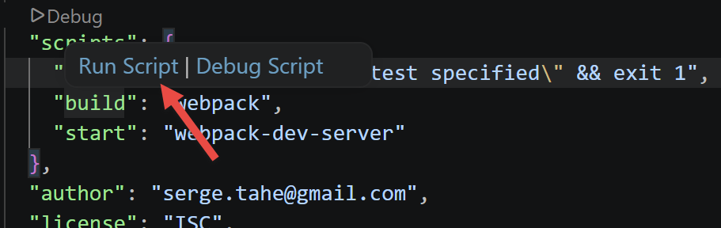 |
Il suffit de cliquer sur [Run Script] pour exécuter la tâche sélectionnée. Vous pouvez également taper la commande suivante :
dans un terminal positionné dans le dossier du fichier [package.json].
La tâche [build] crée un dossier [dist] (1) dans le projet VSCode :
 |
- en [3] : le projet est compilé dans [dist/main.hash.js] et une page [dist/index.html] est créée (2) ;
La page [index.html] générée est la suivante :
<!DOCTYPE html>
<html>
<head>
<meta charset="UTF-8">
<title>Webpack App</title>
</head>
<body>
<script type="text/javascript" src="main.e771aaace94e5be51a5a.js"></script></body>
</html>
Cette page se contente donc d’encapsuler le fichier [main.hash.js] généré par [webpack].
Le projet est exécuté par la tâche [start] :
La page [dist/index.html] est alors chargée sur un serveur, appartenant à la suite [webpack], opérant sur le port 8080 ou 8081 de la machine locale et affichée par le navigateur par défaut de la machine :
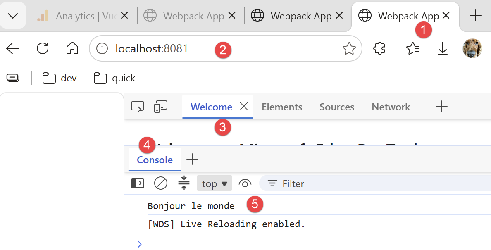 |
- en [2], le port de service du serveur web de [webpack] ;
- en [3-4], l’onglet [console] des outils de développement du navigateur, ici Microsoft Edge (faire F12) ;
- en [5], le résultat de l’exécution du fichier [src/index.ts]. On rappelle que le contenu de celui-ci était le suivant :
console.log("Bonjour le monde");
Maintenant, changeons ce contenu en la ligne suivante dans [index.ts] :
et sauvegardons le fichier. Automatiquement (sans recompiler), un nouveau fichiers [index.html] est généré et ce nouveau fichier [index.html] chargé dans le navigateur :
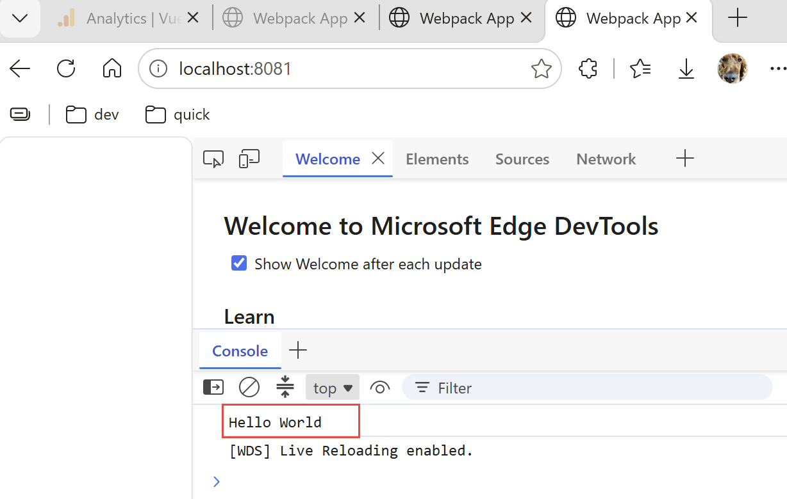 |
Il n’est pas nécessaire d’exécuter la tâche [build] avant la tâche [start] : cette dernière fait d’abord la compilation du projet. Elle ne stocke pas les produits de cette compilation dans le dossier [dist]. Pour s’en apercevoir, il suffit de supprimer ce dossier. On verra alors que la tâche [start] compile et exécute le projet sans créer le dossier [dist]. Elle semble stocker ses produits [index.html, main.hash.js] dans un dossier propre à [webpackdev-server]. Ce comportement est suffisant pour nos tests.
Lorsque le serveur de développement est lancé, toute modification sauvegardée d’un des fichiers du projet provoque une recompilation. Pour cette raison, nous inhibons le mode [Auto Save] de [VSCode]. En effet, nous ne voulons pas de recompilation dès qu’on tape des caractères dans un des fichiers du projet. Nous ne voulons de recompilation qu’au moment des sauvegardes des modifications :

- en [2], l’option [Auto Save] ne doit pas être cochée ;
6.4.3. Tests du client web Javascript du serveur de calcul de l’impôt
Pour tester le client web Javascript du serveur de calcul de l’impôt, il faut désigner [main3.js] [1] comme le point d’entrée du projet dans le fichier [webpack.config.js] [2-3] :
 |  |
- En [1], le script [main3.ts] ;
- en [2-3], l’entrée [entry] à modifier dans le fichier de configuration de [webpack] ;
6.4.3.1. Le script [main3]
Ce script reprend le contenu de main2.ts (chapitre précédent), adapté pour un navigateur (import des polyfills) :
// imports
import axios from 'axios';
import "core-js/stable";
import "regenerator-runtime/runtime";
// imports
import Dao from './Dao3';
import Métier from './Metier';
// fonction asynchrone [main]
async function main(): Promise<void> {
// configuration axios
axios.defaults.timeout = 2000;
axios.defaults.baseURL = 'http://localhost:3000/';
axios.defaults.withCredentials = true;
// instanciation couche [dao]
const dao = new Dao(axios);
// requêtes HTTP
let taxAdminData: any;
try {
// init session
log("-----------init-session");
let response = await dao.initSession();
log(response);
if (response.état != 700) {
throw new Error(JSON.stringify(response.réponse));
}
// authentification
log("-----------authentifier-utilisateur");
response = await dao.authentifierUtilisateur("admin", "admin");
log(response);
if (response.état != 200) {
throw new Error(JSON.stringify(response.réponse));
}
// données fiscales
log("-----------get-admindata");
response = await dao.getAdminData();
log(response);
if (response.état != 1000) {
throw new Error(JSON.stringify(response.réponse));
}
taxAdminData = response.réponse;
} catch (error: any) {
// on logue l'erreur
console.log("erreur=", error.message);
// fin
return;
}
// instanciation couche [métier]
const métier = new Métier(taxAdminData);
// calculs d'impôt
log("-----------calculer-impot x 3");
const simulations: any[] = [];
simulations.push(métier.calculerImpot("oui", 2, 45000));
simulations.push(métier.calculerImpot("non", 2, 45000));
simulations.push(métier.calculerImpot("non", 1, 30000));
// liste des simulations
log("-----------liste-des-simulations");
log(simulations);
// suppression d'une simulation
log("-----------suppression simulation n° 1");
simulations.splice(1, 1);
log(simulations);
}
// log jSON
function log(object: unknown): void {
console.log(JSON.stringify(object, null, 2));
}
// exécution
main();
- lignes 3-4 : import "core-js/stable" et import "regenerator-runtime/runtime" — les polyfills nécessaires pour que le code compilé fonctionne sur des navigateurs qui n'implémentent pas encore nativement toutes les fonctionnalités récentes du langage ;
- ligne 15 : axios.defaults.withCredentials = true — indispensable dans un navigateur pour que les cookies de session soient transmis automatiquement entre les requêtes, ce que le code faisait manuellement dans les versions précédentes (node.js n'a pas cette notion de cookie de navigateur).
6.4.3.2. La classe [Dao3]
Parce que le cookie de session est désormais géré par le module [axios], on peut supprimer la gestion de ce cookie de la classe [Dao] :
'use strict';
// imports
import { AxiosInstance, AxiosRequestConfig, AxiosResponse } from 'axios';
import qs from 'qs'
class Dao3 {
private axios: AxiosInstance;
// constructeur
constructor(axios: AxiosInstance) {
this.axios = axios;
}
// init session
async initSession(): Promise<any> {
// options de la requête HHTP [get /main.php?action=init-session&type=json]
const options: AxiosRequestConfig = {
url: 'main.php',
method: "GET",
// paramètres de l'URL
params: {
action: 'init-session',
type: 'json'
}
};
// exécution de la requête HTTP
return await this.getRemoteData(options);
}
async authentifierUtilisateur(user: string, password: string): Promise<any> {
// options de la requête HHTP [post /main.php?action=authentifier-utilisateur]
const options: AxiosRequestConfig = {
url: 'main.php',
method: "POST",
headers: {
'Content-type': 'application/x-www-form-urlencoded',
},
// corps du POST
data: qs.stringify({
user: user,
password: password
}),
// paramètres de l'URL
params: {
action: 'authentifier-utilisateur'
}
};
// exécution de la requête HTTP
return await this.getRemoteData(options);
}
async getAdminData(): Promise<any> {
// options de la requête HHTP [get /main.php?action=get-admindata]
const options: AxiosRequestConfig = {
url: 'main.php',
method: "GET",
// paramètres de l'URL
params: {
action: 'get-admindata'
}
};
// exécution de la requête HTTP
const data = await this.getRemoteData(options);
// résultat
return data;
}
async getRemoteData(options: AxiosRequestConfig): Promise<any> {
// exécution de la requête HTTP
let response: AxiosResponse;
try {
// requête asynchrone
response = await this.axios.request(options);
} catch (error: any) {
// le paramètre [error] est une instance d'exception - elle peut avoir diverses formes
if (error.response) {
// la réponse du serveur est dans [error.response]
response = error.response;
} else {
// on relance l'erreur
throw error;
}
}
// response est l'ensemble de la réponse HTTP du serveur (entêtes HTTP + réponse elle-même)
// la réponse du serveur est dans [response.data]
return response.data;
}
}
// export de la classe
export default Dao3;
Dans ce code, il n’y a plus de gestion de cookie.
6.4.3.3. Compilation et exécution
Le fichier package.json définit deux tâches npm :
- [npm run build] — compile le projet ; les fichiers produits sont déposés dans dist/ (un main.<hash>.js, et un index.html qui l'intègre automatiquement grâce au plugin html-webpack-plugin) ;
- [npm start] — lance webpack-dev-server : compile le projet et le sert sur http://localhost:8080, avec rechargement automatique de la page à chaque sauvegarde d'un fichier source.
On lance ces deux tâches. Le résultat dans la page [console] du navigateur (faire F12) est le suivant :
 |
6.5. Client HTML
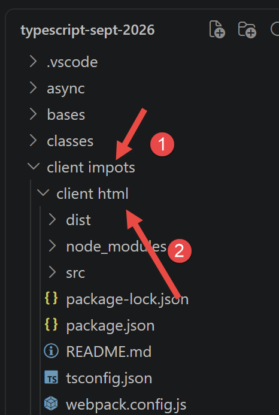 |
Les sections précédentes ont utilisé le client [Client HTTP 3] uniquement en console : le script [main3.ts] dialogue avec le serveur puis affiche ses résultats avec console.log, sans aucune page visible dans le navigateur. Nous allons maintenant construire un vrai client graphique, avec les écrans (authentification, calcul de l'impôt, liste des simulations).
Nous repartons du projet du client [Client HTTP 3] (mêmes fichiers [package.json], [tsconfig.json]) et nous réutilisons sans y toucher deux fichiers déjà connus : [Dao3.ts] (couche [dao]) et [Metier.ts] (couche [métier], déjà présentée à propos de [main3.ts]). Nous ajoutons seulement :
- un fichier [src/index.html] qui sert de gabarit à la page (bandeau, styles CSS, zone où s'affichent les vues) ;
- un nouveau fichier [Vues.ts] qui construit les éléments HTML (formulaires, tableau, messages d'erreur) directement en JavaScript, sans jamais appeler le serveur lui-même ;
- un nouveau fichier [AppHtml.ts], le contrôleur de l'application : c'est lui qui orchestre les couches [dao] et [métier], puis demande à la couche [vues] d'afficher le résultat ;
- une petite modification de [webpack.config.js] pour que le projet compile ce nouveau point d'entrée avec le nouveau gabarit HTML.
Le quatuor [dao] / [métier] / [vues] / contrôleur reprend donc, à l'identique, l'architecture en couches déjà vue dans ce cours : couche [dao] pour l'accès au serveur, couche [métier] pour la logique applicative (le calcul de l'impôt), script principal (ici la classe [AppHtml]) pour l'orchestration. Seule la couche [vues] est vraiment nouvelle : c'est elle qui remplace l'affichage console par un affichage dans le navigateur.
6.5.1. Architecture de la solution
Ce client HTML fonctionne exactement sur le même mode que [main3.ts], et c'est un choix important : il ne sollicite le serveur PHP que pour trois actions, toujours les mêmes, init-session, authentifier-utilisateur et get-admindata. Le code PHP du serveur montre pourtant que celui-ci sait aussi calculer l'impôt lui-même et mémoriser les simulations dans sa session (c'est ce que font les actions calculer-impot, lister-simulations et supprimer-simulation, présentes dans le dossier [Controllers]) — mais ce client ne les utilise pas.
La raison est simple : une fois les données fiscales (taux, plafonds...) récupérées une seule fois avec get-admindata, tout le nécessaire pour calculer l'impôt est déjà dans le navigateur, grâce à la classe [Métier]. Redemander ce calcul au serveur à chaque simulation obligerait à faire un aller-retour réseau évitable ; de même, puisque chaque simulation calculée est aussitôt gardée dans le navigateur, redemander la liste au serveur (lister-simulations) n'apporterait rien de plus. Ce client sollicite donc le moins possible le serveur — exactement le principe déjà mis en œuvre dans [main3.ts] :
- la couche [dao] ([Dao3.ts]) n'est pas modifiée : ses trois méthodes déjà présentées plus haut (initSession, authentifierUtilisateur, getAdminData) suffisent, on ne lui en ajoute aucune ;
- juste après une authentification réussie, getAdminData est appelée une bonne fois pour toutes, et son résultat sert à construire un objet Métier (new Métier(taxAdminData)), conservé pendant toute la session de travail ;
- chaque calcul d'impôt appelle ensuite directement métier.calculerImpot(marié, enfants, salaire) — une fonction JavaScript ordinaire, exécutée dans le navigateur, sans aucun appel réseau ;
- les simulations calculées sont accumulées dans un simple tableau JavaScript, gardé en mémoire par le contrôleur — un push par calcul, un splice par suppression, exactement comme le fait [main3.ts] avec ses instructions simulations.push(...) et simulations.splice(1, 1).
Petite différence avec [main3.ts] : la méthode métier.calculerImpot ne renvoie que les valeurs qu'elle a calculées (impôt, surcôte, décôte, réduction, taux), pas les paramètres saisis par l'utilisateur (marié, enfants, salaire). [main3.ts] n'en a pas besoin, puisqu'il se contente d'un console.log ; mais notre vue [Liste des simulations] doit, elle, réafficher ces trois paramètres dans le tableau — le contrôleur les rattache donc lui-même au résultat avant de le mémoriser (on le verra dans le code d'[AppHtml.ts]).
Enfin, la vue [Fin de session] ne fait plus non plus d'appel au serveur : elle se contente d'oublier l'objet [Métier] et la liste des simulations, puis de réafficher l'écran d'authentification. Rappelons que les réponses des trois actions serveur encore utilisées ont toujours la même forme, déjà rencontrée dans [main3.ts] : un objet JSON { action, état, réponse }, où réponse contient soit le résultat demandé (en cas de succès), soit un message d'erreur — une chaîne de caractères ou un tableau de chaînes, selon le contrôleur PHP concerné.
6.5.1.1. Le gabarit HTML : le fichier [src/index.html]
Un projet [webpack] utilisant [html-webpack-plugin] (comme c'est le cas ici, voir le fichier [webpack.config.js]) peut partir d'une page HTML toute prête — un « gabarit » — dans laquelle le plugin viendra automatiquement injecter la balise <script> qui charge le bundle compilé. Jusqu'ici, ce projet n'avait pas de gabarit : [html-webpack-plugin] générait une page HTML minimale, vide, sans style. Nous lui en donnons maintenant un, le fichier [src/index.html], qui contient :
- un bloc <style> avec toute la mise en forme de l'application (bandeau, menu, formulaires, tableau, messages d'erreur ou de résultat) ;
- une unique balise <div id="app"></div> : c'est le seul élément HTML « visible » du gabarit — tout le reste de la page (bandeau, formulaires, tableau...) sera construit dynamiquement en JavaScript par la classe [Vues], à l'intérieur de cette balise.
<!DOCTYPE html>
<html lang="fr">
<head>
<meta charset="UTF-8" />
<title>Application impôts</title>
<style>
:root {
--bleu-titre: #1976d2;
--bleu-clair: #d6e9f8;
--bleu-clair-bord: #b6d7f0;
--vert-clair: #dcedc8;
--vert-clair-bord: #b9d999;
--gris-bandeau: #e8eaed;
--gris-texte: #333;
--lien-bleu: #1a73e8;
}
* {
box-sizing: border-box;
}
body {
margin: 0;
font-family: -apple-system, "Segoe UI", Arial, sans-serif;
color: var(--gris-texte);
background: #ffffff;
}
#app {
max-width: 900px;
margin: 20px auto;
border: 1px solid #ddd;
}
/* ---------- bandeau ---------- */
.bandeau {
display: flex;
align-items: center;
gap: 24px;
background: var(--gris-bandeau);
padding: 20px 30px;
}
.bandeau .logo {
flex: none;
}
.bandeau h1 {
margin: 0;
font-size: 28px;
font-weight: 400;
color: #444;
}
/* ---------- corps ---------- */
.corps {
display: flex;
min-height: 320px;
}
.menu {
flex: 0 0 160px;
padding: 24px 16px;
border-right: 1px solid #eee;
}
.menu a {
display: block;
color: var(--lien-bleu);
text-decoration: none;
margin-bottom: 14px;
cursor: pointer;
font-size: 14px;
}
.menu a:hover {
text-decoration: underline;
}
.contenu {
flex: 1;
padding: 24px 30px;
}
.contenu.pleine-largeur {
flex: 1 1 100%;
}
/* ---------- titre de section ---------- */
.titre-section {
background: var(--bleu-clair);
border: 1px solid var(--bleu-clair-bord);
padding: 10px 16px;
font-size: 16px;
margin-bottom: 20px;
}
/* ---------- formulaires ---------- */
.ligne-champ {
display: flex;
align-items: center;
margin-bottom: 16px;
}
.ligne-champ label {
flex: 0 0 220px;
font-size: 14px;
}
.ligne-champ .champ {
display: flex;
flex-direction: column;
}
.ligne-champ input[type="text"],
.ligne-champ input[type="password"],
.ligne-champ input[type="number"] {
padding: 6px 8px;
border: 1px solid #bbb;
border-radius: 3px;
font-size: 14px;
width: 160px;
}
.ligne-champ .aide {
font-size: 11px;
color: #888;
margin-top: 3px;
}
.radios label {
flex: none;
font-weight: normal;
margin-right: 12px;
}
button, .btn-valider {
background: #2196f3;
color: #fff;
border: none;
border-radius: 3px;
padding: 8px 20px;
font-size: 14px;
cursor: pointer;
}
button:hover {
background: #1976d2;
}
/* ---------- résultat / erreur ---------- */
.resultat {
background: var(--vert-clair);
border: 1px solid var(--vert-clair-bord);
padding: 14px 18px;
margin-top: 20px;
font-size: 14px;
line-height: 1.7;
}
.erreur {
background: #fde8e8;
border: 1px solid #f3b4b4;
color: #a02020;
padding: 12px 16px;
margin-bottom: 16px;
font-size: 14px;
}
/* ---------- tableau des simulations ---------- */
table.simulations {
border-collapse: collapse;
width: 100%;
font-size: 13px;
}
table.simulations th,
table.simulations td {
border: 1px solid #ddd;
padding: 8px 10px;
text-align: right;
}
table.simulations th:first-child,
table.simulations td:first-child,
table.simulations th:nth-child(2),
table.simulations td:nth-child(2) {
text-align: left;
}
table.simulations th {
background: #f5f5f5;
font-weight: 600;
}
table.simulations a.supprimer {
color: var(--lien-bleu);
cursor: pointer;
text-decoration: none;
}
table.simulations a.supprimer:hover {
text-decoration: underline;
}
.simulations-vide {
font-size: 14px;
color: #777;
font-style: italic;
}
</style>
</head>
<body>
<div id="app"></div>
</body>
</html>
Ce fichier est un fichier HTML/CSS classique — rien de spécifique à TypeScript ici — mais comme le public de ce cours est débutant, détaillons les points les plus importants :
Les variables CSS (lignes 7 à 16) :
- le bloc :root { --nom: valeur; ... } déclare des variables CSS (aussi appelées « custom properties ») : --bleu-clair, --vert-clair, etc. ;
- elles sont ensuite réutilisées partout ailleurs dans la feuille de style avec la fonction var(...), par exemple background: var(--gris-bandeau); à la ligne 40 ;
- l'intérêt : changer une seule fois la couleur en tête de fichier suffit à la changer partout où elle est utilisée, plutôt que de devoir chercher chaque code couleur dans tout le fichier.
La structure générale (lignes 29 à 87) :
- #app (ligne 29) limite la largeur de l'application et lui donne une bordure ;
- .bandeau (ligne 36) affiche le logo et le titre côte à côte grâce à display: flex ;
- .corps (ligne 56) découpe le reste de la page en deux colonnes flexibles : .menu (ligne 61, largeur fixe de 160 pixels) à gauche, et .contenu (ligne 80, largeur variable) à droite ; la classe .contenu.pleine-largeur (ligne 85) permet de faire disparaître cette colonne de menu pour la vue authentification, qui n'en a pas besoin.
Les classes réutilisées par la couche [vues] (lignes 90 à 210) :
- .titre-section (ligne 90) : l'encadré bleu clair utilisé pour les titres « Veuillez vous authentifier », « Remplissez le formulaire... », « Liste de vos simulations » ;
- .ligne-champ (ligne 99) : une ligne de formulaire (étiquette + champ de saisie) ;
- .resultat (ligne 152) : l'encadré vert clair qui affiche le résultat d'un calcul d'impôt ;
- .erreur (ligne 161) : l'encadré rouge clair qui affiche un message d'erreur renvoyé par le serveur ;
- table.simulations (ligne 171) : la mise en forme du tableau de la vue « liste des simulations », avec ses liens Supprimer en bleu (règle table.simulations a.supprimer, ligne 196).
On retrouvera chacune de ces classes dans le code de la classe [Vues] (className = '...' ou classList.add('...')) : c'est elle qui, en JavaScript, crée les éléments HTML et leur applique ces classes CSS.
6.5.1.2. La configuration [webpack.config.js] modifiée
Le fichier [webpack.config.js] a déjà été présenté en entier plus haut dans ce chapitre. Deux petits changements suffisent pour qu'il compile ce nouveau client graphique plutôt que le script de test [main3.ts] :
module.exports = {
mode: "development",
// client HTML (vues authentification / calcul / liste des simulations)
entry: "./src/AppHtml.ts",
// point d'entrée initial du projet (test en console des couches [dao]/[métier]),
// conservé pour référence - on peut y revenir en commentant la ligne au-dessus
//entry: "./src/main3.ts",
//entry: "./src/index.ts",
output: {
filename: "[name].[chunkhash].js",
path: path.resolve(__dirname, "dist")
},
resolve: {
extensions: [".ts", ".js"]
},
plugins: [
new webpack.ProgressPlugin(),
// template propre au client HTML (bandeau, styles, <div id="app">)
new HtmlWebpackPlugin({
template: path.resolve(__dirname, "src/index.html")
})
],
- ligne 4 : entry: "./src/AppHtml.ts" remplace entry: "./src/main3.ts" — c'est maintenant le nouveau contrôleur qui sert de point d'entrée au bundle ; l'ancienne valeur est conservée juste en dessous, en commentaire (lignes 5 à 8), pour pouvoir revenir facilement au script de test si besoin ;
- lignes 21 à 23 : new HtmlWebpackPlugin({ template: ... }) remplace new HtmlWebpackPlugin() (sans paramètre) — on lui indique explicitement d'utiliser notre gabarit [src/index.html] plutôt que de générer une page HTML vide.
6.5.1.3. Les couches [dao] et [métier] : deux fichiers réutilisés sans modification
Le fichier [Dao3.ts] n'est ici pas modifié : ses trois méthodes déjà présentées plus haut dans ce chapitre (initSession, authentifierUtilisateur, getAdminData, plus l'utilitaire getRemoteData) suffisent très exactement aux besoins de ce client graphique — on ne lui en ajoute aucune.
[Metier.ts] n'est pas non plus modifié : c'est la même classe [Métier], avec sa méthode calculerImpot(marié, enfants, salaire), déjà présentée en entier à propos de [main3.ts] (section [Client HTTP 2]). Ce client graphique est cependant le premier de ce chapitre à vraiment afficher les résultats de ce calcul à l'écran plutôt que de simplement les journaliser avec console.log — c'est l'occasion de vérifier que la couche [vues], présentée juste après, sait correctement les mettre en forme.
6.5.1.4. La couche [vues] : le fichier [Vues.ts]
C'est le fichier le plus long de ce client, mais aussi le plus simple à comprendre une fois qu'on a repéré son principe : la classe [Vues] ne fait aucun appel réseau — elle ne connaît même pas l'existence du serveur PHP. Son unique travail est de construire, avec les fonctions du DOM (document.createElement, appendChild, classList...), les éléments HTML des trois écrans de l'application, à l'intérieur de la balise <div id="app"> du gabarit.
Quand l'utilisateur clique sur un bouton ou un lien (« Valider », « Supprimer », « Fin de session »...), la classe [Vues] ne sait pas non plus quoi faire de ce clic : elle se contente d'appeler une fonction de rappel (« callback ») qui lui a été fournie par le contrôleur — c'est le contrôleur, [AppHtml.ts], présenté juste après, qui décide alors quoi faire (appeler le serveur, changer de vue, etc.). Ce découplage est ce qui permet à [Vues.ts] de rester indépendant de la couche [dao].
'use strict';
// -----------------------------------------------------------------------
// construction des vues (DOM) de l'application - calquées sur les
// captures d'écran du document [vues_application_web.odt] :
// - vue authentification
// - vue calcul de l'impôt (formulaire + résultat)
// - vue liste des simulations
// Ce module ne fait aucun appel réseau : il construit le DOM et délègue
// les actions de l'utilisateur (Valider, Supprimer, liens du menu) à des
// fonctions de rappel fournies par le contrôleur [App].
// -----------------------------------------------------------------------
// une décoration générique (pas la photo du serveur PHP d'origine, que nous
// n'avons pas) : à remplacer si besoin par le logo réel dans [Resources/]
const LOGO_SVG = `
<svg width="60" height="60" viewBox="0 0 60 60" xmlns="http://www.w3.org/2000/svg">
<circle cx="30" cy="30" r="29" fill="#eef1ec" stroke="#ccc" />
<g fill="none" stroke="#8a9a7a" stroke-width="2">
<path d="M30 46 C30 32 22 28 17 19" />
<path d="M30 46 C30 30 39 26 44 17" />
<path d="M30 46 C30 37 30 30 30 21" />
</g>
<g fill="#b9c9a6">
<circle cx="17" cy="19" r="4.5" />
<circle cx="44" cy="17" r="4.5" />
<circle cx="30" cy="19" r="4.5" />
</g>
</svg>`;
// résultat d'un calcul d'impôt tel que rendu par le serveur (voir [Simulation.php])
export interface Simulation {
'marié': string;
enfants: number;
salaire: number;
'impôt': number;
'surcôte': number;
'décôte': number;
'réduction': number;
taux: number;
}
// callbacks de la vue [authentification]
export interface CallbacksAuthentification {
onValider: (user: string, password: string) => void;
}
// callbacks de la vue [calcul]
export interface CallbacksCalcul {
onValider: (marié: string, enfants: number, salaire: number) => void;
onListe: () => void;
onFinSession: () => void;
}
// callbacks de la vue [liste]
export interface CallbacksListe {
onSupprimer: (numéro: number) => void;
onCalcul: () => void;
onFinSession: () => void;
}
class Vues {
private bandeau: HTMLElement;
private menu: HTMLElement;
private contenu: HTMLElement;
// construit la structure fixe de la page (bandeau + zone menu/contenu)
// à l'intérieur de l'élément [racine]
constructor(private racine: HTMLElement) {
this.racine.innerHTML = '';
this.bandeau = document.createElement('div');
this.bandeau.className = 'bandeau';
const logo = document.createElement('div');
logo.className = 'logo';
logo.innerHTML = LOGO_SVG;
const titre = document.createElement('h1');
titre.textContent = 'Calculez votre impôt';
this.bandeau.appendChild(logo);
this.bandeau.appendChild(titre);
const corps = document.createElement('div');
corps.className = 'corps';
this.menu = document.createElement('div');
this.menu.className = 'menu';
this.contenu = document.createElement('div');
this.contenu.className = 'contenu';
corps.appendChild(this.menu);
corps.appendChild(this.contenu);
this.racine.appendChild(this.bandeau);
this.racine.appendChild(corps);
}
// --------------------------------------------------------------------
// outils de construction du DOM
// --------------------------------------------------------------------
private viderMenu(): void {
this.menu.innerHTML = '';
this.menu.style.display = 'none';
this.contenu.classList.add('pleine-largeur');
}
private lienMenu(texte: string, onClick: () => void): HTMLAnchorElement {
const a = document.createElement('a');
a.textContent = texte;
a.addEventListener('click', onClick);
return a;
}
private afficherMenu(liens: HTMLAnchorElement[]): void {
this.menu.innerHTML = '';
this.menu.style.display = '';
this.contenu.classList.remove('pleine-largeur');
liens.forEach(lien => this.menu.appendChild(lien));
}
private banniereErreur(message?: string): HTMLElement | null {
if (!message) {
return null;
}
const div = document.createElement('div');
div.className = 'erreur';
div.textContent = message;
return div;
}
// une ligne de formulaire [label + champ texte/mot de passe/nombre]
private ligneChamp(
libellé: string,
type: 'text' | 'password' | 'number',
valeurInitiale: string,
aide?: string
): { ligne: HTMLElement; input: HTMLInputElement } {
const ligne = document.createElement('div');
ligne.className = 'ligne-champ';
const label = document.createElement('label');
label.textContent = libellé;
const champ = document.createElement('div');
champ.className = 'champ';
const input = document.createElement('input');
input.type = type;
input.value = valeurInitiale;
if (type === 'number') {
input.min = '0';
}
champ.appendChild(input);
if (aide) {
const div = document.createElement('div');
div.className = 'aide';
div.textContent = aide;
champ.appendChild(div);
}
ligne.appendChild(label);
ligne.appendChild(champ);
return { ligne, input };
}
// --------------------------------------------------------------------
// vue [authentification]
// --------------------------------------------------------------------
vueAuthentification(erreur: string | undefined, callbacks: CallbacksAuthentification): void {
this.viderMenu();
this.contenu.innerHTML = '';
const titre = document.createElement('div');
titre.className = 'titre-section';
titre.textContent = 'Veuillez vous authentifier';
this.contenu.appendChild(titre);
const banniere = this.banniereErreur(erreur);
if (banniere) {
this.contenu.appendChild(banniere);
}
const champUser = this.ligneChamp("Nom d'utilisateur", 'text', 'admin');
const champPassword = this.ligneChamp('Mot de passe', 'password', '');
this.contenu.appendChild(champUser.ligne);
this.contenu.appendChild(champPassword.ligne);
const bouton = document.createElement('button');
bouton.textContent = 'Valider';
bouton.addEventListener('click', () => {
callbacks.onValider(champUser.input.value.trim(), champPassword.input.value);
});
this.contenu.appendChild(bouton);
}
// --------------------------------------------------------------------
// vue [calcul de l'impôt]
// --------------------------------------------------------------------
vueCalcul(
résultat: Simulation | undefined,
erreur: string | undefined,
callbacks: CallbacksCalcul
): void {
this.afficherMenu([
this.lienMenu('Liste des simulations', callbacks.onListe),
this.lienMenu('Fin de session', callbacks.onFinSession)
]);
this.contenu.innerHTML = '';
const titre = document.createElement('div');
titre.className = 'titre-section';
titre.textContent = 'Remplissez le formulaire ci-dessous puis validez-le';
this.contenu.appendChild(titre);
const banniere = this.banniereErreur(erreur);
if (banniere) {
this.contenu.appendChild(banniere);
}
// ligne des radios [marié(e)]
const ligneMarié = document.createElement('div');
ligneMarié.className = 'ligne-champ';
const labelMarié = document.createElement('label');
labelMarié.textContent = 'Etes-vous marié(e) ou pacsé(e) ?';
const champMarié = document.createElement('div');
champMarié.className = 'champ radios';
const radioOui = document.createElement('input');
radioOui.type = 'radio';
radioOui.name = 'marié';
radioOui.value = 'oui';
radioOui.checked = true;
const labelOui = document.createElement('label');
labelOui.appendChild(radioOui);
labelOui.appendChild(document.createTextNode(' Oui'));
const radioNon = document.createElement('input');
radioNon.type = 'radio';
radioNon.name = 'marié';
radioNon.value = 'non';
const labelNon = document.createElement('label');
labelNon.appendChild(radioNon);
labelNon.appendChild(document.createTextNode(' Non'));
champMarié.appendChild(labelOui);
champMarié.appendChild(labelNon);
ligneMarié.appendChild(labelMarié);
ligneMarié.appendChild(champMarié);
this.contenu.appendChild(ligneMarié);
const champEnfants = this.ligneChamp("Nombre d'enfants à charge", 'number', '0');
this.contenu.appendChild(champEnfants.ligne);
const champSalaire = this.ligneChamp('Salaire annuel', 'number', '', "Arrondissez à l'euro inférieur");
this.contenu.appendChild(champSalaire.ligne);
const bouton = document.createElement('button');
bouton.textContent = 'Valider';
bouton.addEventListener('click', () => {
const marié = radioOui.checked ? 'oui' : 'non';
const enfants = parseInt(champEnfants.input.value, 10) || 0;
const salaire = parseInt(champSalaire.input.value, 10) || 0;
callbacks.onValider(marié, enfants, salaire);
});
this.contenu.appendChild(bouton);
// résultat de la dernière simulation (encadré vert), s'il y en a un
if (résultat) {
const box = document.createElement('div');
box.className = 'resultat';
const tauxPourcent = Math.round(résultat.taux * 100);
box.innerHTML =
`Montant de l'impôt : ${résultat['impôt']} euros<br>` +
`Décôte : ${résultat['décôte']} euros<br>` +
`Réduction : ${résultat['réduction']} euros<br>` +
`Surcôte : ${résultat['surcôte']} euros<br>` +
`Taux d'imposition : ${tauxPourcent} %`;
this.contenu.appendChild(box);
}
}
// --------------------------------------------------------------------
// vue [liste des simulations]
// --------------------------------------------------------------------
vueListe(
simulations: Simulation[],
erreur: string | undefined,
callbacks: CallbacksListe
): void {
this.afficherMenu([
this.lienMenu("Calcul de l'impôt", callbacks.onCalcul),
this.lienMenu('Fin de session', callbacks.onFinSession)
]);
this.contenu.innerHTML = '';
const titre = document.createElement('div');
titre.className = 'titre-section';
titre.textContent = 'Liste de vos simulations';
this.contenu.appendChild(titre);
const banniere = this.banniereErreur(erreur);
if (banniere) {
this.contenu.appendChild(banniere);
}
if (simulations.length === 0) {
const vide = document.createElement('div');
vide.className = 'simulations-vide';
vide.textContent = 'Aucune simulation enregistrée.';
this.contenu.appendChild(vide);
return;
}
const table = document.createElement('table');
table.className = 'simulations';
const thead = document.createElement('thead');
thead.innerHTML =
'<tr><th>#</th><th>Marié</th><th>Nombre d\'enfants</th><th>Salaire annuel</th>' +
'<th>Montant impôt</th><th>Surcôte</th><th>Décôte</th><th>Réduction</th><th>Taux</th><th></th></tr>';
table.appendChild(thead);
const tbody = document.createElement('tbody');
simulations.forEach((simulation, numéro) => {
const tr = document.createElement('tr');
const tauxPourcent = Math.round(simulation.taux * 100);
tr.innerHTML =
`<td>${numéro}</td>` +
`<td>${simulation['marié']}</td>` +
`<td>${simulation.enfants}</td>` +
`<td>${simulation.salaire}</td>` +
`<td>${simulation['impôt']}</td>` +
`<td>${simulation['surcôte']}</td>` +
`<td>${simulation['décôte']}</td>` +
`<td>${simulation['réduction']}</td>` +
`<td>${tauxPourcent} %</td>`;
const tdSupprimer = document.createElement('td');
const lienSupprimer = document.createElement('a');
lienSupprimer.className = 'supprimer';
lienSupprimer.textContent = 'Supprimer';
lienSupprimer.addEventListener('click', () => callbacks.onSupprimer(numéro));
tdSupprimer.appendChild(lienSupprimer);
tr.appendChild(tdSupprimer);
tbody.appendChild(tr);
});
table.appendChild(tbody);
this.contenu.appendChild(table);
}
}
// export de la classe
export default Vues;
Le logo et les interfaces TypeScript (lignes 1 à 60) :
- lignes 16 à 29 : LOGO_SVG est une chaîne de caractères multi-lignes (délimitée par des accents graves \ \, une « template string ») contenant un petit dessin vectoriel (SVG) générique, utilisé à la place de la photo du serveur PHP d'origine, qui n'était pas fournie avec le projet TypeScript ;
- lignes 32 à 41 : l'interface Simulation décrit la forme d'une simulation telle que renvoyée par le serveur — on retrouve exactement les mêmes noms de champs que dans la classe PHP [Simulation.php] (marié, enfants, salaire, impôt, surcôte, décôte, réduction, taux) ;
- lignes 44 à 60 : les trois interfaces Callbacks... décrivent, pour chaque vue, les fonctions de rappel que le contrôleur doit fournir (par exemple onValider, appelée quand l'utilisateur clique sur le bouton « Valider »).
Le constructeur (lignes 62 à 94) :
- ligne 70 : le constructeur reçoit l'élément HTML racine (racine, la balise <div id="app"> du gabarit) — le mot-clé private devant le paramètre est un raccourci TypeScript qui crée automatiquement un attribut this.racine sans avoir à écrire this.racine = racine; ;
- lignes 73 à 81 : construction du bandeau (div.bandeau), avec le logo et le titre <h1>Calculez votre impôt</h1> ;
- lignes 83 à 90 : construction du corps de la page (div.corps), qui contient toujours deux zones, this.menu et this.contenu — ce sont des propriétés de l'objet (lignes 64 à 66), gardées en mémoire pour pouvoir être vidées et remplies à chaque changement de vue ;
- lignes 92 et 93 : le bandeau et le corps sont enfin ajoutés à la racine de la page.
Les méthodes utilitaires privées (lignes 96 à 159) :
- viderMenu (lignes 100 à 104) : cache la colonne de menu et ajoute la classe CSS pleine-largeur à la zone de contenu — utilisée par la vue authentification, qui n'a pas de menu ;
- lienMenu (lignes 106 à 111) : crée un lien <a> avec son texte et sa fonction de rappel au clic — une petite fabrique réutilisée pour construire chaque lien du menu (« Liste des simulations », « Fin de session »...) ;
- afficherMenu (lignes 113 à 118) : affiche la colonne de menu et y place les liens reçus en paramètre (un tableau de liens déjà construits avec lienMenu) ;
- banniereErreur (lignes 120 à 128) : construit l'encadré rouge d'erreur (classe CSS erreur) si un message d'erreur est fourni, ou ne rend rien (null) sinon ;
- ligneChamp (lignes 130 à 159) : la fabrique la plus utilisée du fichier — elle construit une ligne de formulaire complète (étiquette + champ de saisie, avec éventuellement un texte d'aide) et rend à la fois la ligne complète (ligne) et le champ de saisie seul (input), pour que l'appelant puisse ensuite lire la valeur tapée par l'utilisateur.
La méthode vueAuthentification (lignes 161 à 189) :
- lignes 165 et 166 : la vue commence toujours par vider le menu et le contenu de la vue précédente ;
- lignes 168 à 171 : l'encadré bleu « Veuillez vous authentifier » ;
- lignes 173 à 176 : la bannière d'erreur, affichée seulement si erreur n'est pas vide (c'est-à-dire seulement après une tentative d'authentification échouée) ;
- lignes 178 à 181 : les deux champs du formulaire, construits avec ligneChamp ;
- lignes 183 à 188 : le bouton « Valider » ; son gestionnaire de clic (lignes 185 à 187) appelle callbacks.onValider(...) avec le contenu des deux champs de saisie — c'est tout ce que fait cette classe : elle ne vérifie ni n'envoie rien elle-même, elle transmet simplement ce que l'utilisateur a tapé.
La méthode vueCalcul (lignes 191 à 276) :
- lignes 199 à 202 : contrairement à la vue précédente, celle-ci affiche un menu, avec les liens « Liste des simulations » et « Fin de session » ;
- lignes 217 à 245 : construction des deux boutons radio « Oui »/« Non » (« Êtes-vous marié(e) ou pacsé(e) ? ») — un peu plus longue que les autres champs car les boutons radio n'ont pas de fabrique générique comme ligneChamp ;
- lignes 247 à 251 : les champs « Nombre d'enfants à charge » et « Salaire annuel », construits eux avec ligneChamp ;
- lignes 253 à 261 : le bouton « Valider » ; son gestionnaire de clic lit l'état des boutons radio et le contenu des deux champs numériques (avec parseInt, puisque la valeur d'un champ HTML est toujours une chaîne de caractères), puis appelle callbacks.onValider(marié, enfants, salaire) ;
- lignes 264 à 275 : si un résultat a été fourni (c'est-à-dire après un calcul réussi), l'encadré vert est construit et rempli avec les cinq informations de la simulation ; résultat.taux est un nombre entre 0 et 1 (par exemple 0.14) que la ligne 267 transforme en pourcentage arrondi (14) pour l'affichage.
La méthode vueListe (lignes 278 à 344) :
- lignes 286 à 289 : le menu de cette vue propose « Calcul de l'impôt » (pour revenir en arrière) et « Fin de session » ;
- lignes 303 à 309 : cas particulier où la liste est vide — un simple message est affiché (« Aucune simulation enregistrée. ») et la méthode s'arrête là (return), sans construire de tableau ;
- lignes 311 à 317 : construction de l'en-tête du tableau (<thead>), avec une colonne par champ d'une simulation, plus une dernière colonne vide pour le lien « Supprimer » ;
- lignes 319 à 341 : une ligne de tableau (<tr>) est construite pour chaque simulation, avec simulations.forEach(...) — le deuxième paramètre de cette fonction, numéro, est automatiquement l'indice (à partir de 0) de la simulation dans le tableau, exactement le numéro attendu par l'action serveur supprimer-simulation ;
- lignes 333 à 339 : le lien « Supprimer » de chaque ligne ; son gestionnaire de clic (ligne 337) appelle callbacks.onSupprimer(numéro) avec le numéro de la ligne concernée.
6.5.1.5. Le contrôleur : le fichier [AppHtml.ts]
C'est le chef d'orchestre de l'application : il reprend le rôle joué par la fonction main() de [main3.ts], mais sous la forme d'une classe, avec une méthode par vue. Il orchestre maintenant deux couches, [dao] (le serveur) et [métier] (le calcul), avant de demander à la couche [vues] d'afficher soit un résultat, soit un message d'erreur :
// imports
import axios from 'axios';
import "core-js/stable";
import "regenerator-runtime/runtime";
// imports
import Dao from './Dao3';
import Métier from './Metier';
import Vues, { Simulation } from './Vues';
// -----------------------------------------------------------------------
// contrôleur de l'application HTML : orchestre les appels au serveur
// (couche [dao]), les calculs (couche [métier]) et l'affichage des vues
// (couche [vues]).
//
// Comme [main3.ts], ce client ne sollicite le serveur PHP que pour trois
// actions : [init-session], [authentifier-utilisateur] et [get-admindata].
// Une fois les données fiscales (taux, plafonds...) récupérées avec
// [get-admindata], c'est la couche [métier] (classe [Métier], le même
// fichier [Metier.ts] que [main3.ts]) qui calcule l'impôt dans le
// navigateur, sans nouvel appel réseau. La liste des simulations est elle
// aussi conservée uniquement dans le navigateur (tableau [this.simulations]),
// exactement comme le fait [main3.ts] avec son tableau local [simulations]
// (voir `simulations.push(...)` et `simulations.splice(...)`).
// -----------------------------------------------------------------------
class AppHtml {
private dao: Dao;
private vues: Vues;
// couche [métier] : n'existe qu'une fois les données fiscales récupérées
// (après une authentification réussie) - cf [initialiserMétier]
private métier?: Métier;
// liste des simulations déjà calculées, conservée dans le navigateur
private simulations: Simulation[] = [];
constructor() {
// configuration axios - identique à [main3.ts]
axios.defaults.timeout = 5000;
axios.defaults.baseURL = 'http://localhost/';
axios.defaults.withCredentials = true;
// couches [dao] et [vues]
this.dao = new Dao(axios);
this.vues = new Vues(document.getElementById('app')!);
}
// point d'entrée de l'application
async démarrer(): Promise<void> {
try {
// init session - obligatoire avant toute autre action (cf [main.php])
const réponse = await this.dao.initSession();
if (réponse.état !== 700) {
this.vues.vueAuthentification(this.formaterErreur(réponse.réponse), {
onValider: (user, password) => this.authentifier(user, password)
});
return;
}
} catch (erreur: any) {
this.vues.vueAuthentification(
"Impossible de contacter le serveur (" + erreur.message + ")",
{ onValider: (user, password) => this.authentifier(user, password) }
);
return;
}
// session initialisée : on affiche l'authentification
this.afficherAuthentification();
}
// --------------------------------------------------------------------
// vue [authentification]
// --------------------------------------------------------------------
private afficherAuthentification(erreur?: string): void {
this.vues.vueAuthentification(erreur, {
onValider: (user, password) => this.authentifier(user, password)
});
}
private async authentifier(user: string, password: string): Promise<void> {
try {
const réponse = await this.dao.authentifierUtilisateur(user, password);
if (réponse.état === 200) {
// authentification réussie : comme dans [main3.ts], on récupère
// maintenant, une bonne fois pour toutes, les données fiscales
// nécessaires à la couche [métier]
await this.initialiserMétier();
} else {
// échec (mauvais login/mot de passe, ou paramètres manquants)
this.afficherAuthentification(this.formaterErreur(réponse.réponse));
}
} catch (erreur: any) {
this.afficherAuthentification("Impossible de contacter le serveur (" + erreur.message + ")");
}
}
// récupère les données de l'administration fiscale et instancie la couche
// [métier] avec ces données - un seul appel serveur pour toute la session,
// exactement comme [main3.ts]
private async initialiserMétier(): Promise<void> {
try {
const réponse = await this.dao.getAdminData();
if (réponse.état === 1000) {
this.métier = new Métier(réponse.réponse);
// nouvelle session de travail : on repart d'une liste vide
this.simulations = [];
this.afficherCalcul();
} else {
this.afficherAuthentification(this.formaterErreur(réponse.réponse));
}
} catch (erreur: any) {
this.afficherAuthentification("Impossible de contacter le serveur (" + erreur.message + ")");
}
}
// --------------------------------------------------------------------
// vue [calcul de l'impôt]
// --------------------------------------------------------------------
private afficherCalcul(résultat?: Simulation, erreur?: string): void {
this.vues.vueCalcul(résultat, erreur, {
onValider: (marié, enfants, salaire) => this.calculer(marié, enfants, salaire),
onListe: () => this.afficherListe(),
onFinSession: () => this.finSession()
});
}
// calcul de l'impôt fait entièrement dans le navigateur (couche [métier]) :
// aucun appel au serveur, contrairement à la première version de ce client
private calculer(marié: string, enfants: number, salaire: number): void {
// this.métier a forcément été initialisé : on n'arrive sur la vue
// [calcul] qu'après [initialiserMétier]
const résultat = this.métier!.calculerImpot(marié, enfants, salaire);
// le résultat rendu par [métier.calculerImpot] ne contient que les
// valeurs calculées (impôt, surcôte, décôte, réduction, taux) : on lui
// ajoute les paramètres saisis par l'utilisateur, pour pouvoir les
// réafficher dans la liste des simulations
const simulation: Simulation = { 'marié': marié, enfants: enfants, salaire: salaire, ...résultat };
// mémorisation dans le navigateur (comme `simulations.push(...)` dans [main3.ts])
this.simulations.push(simulation);
this.afficherCalcul(simulation);
}
// --------------------------------------------------------------------
// vue [liste des simulations]
// --------------------------------------------------------------------
// plus aucun appel serveur ici : la liste est déjà entièrement dans
// [this.simulations]
private afficherListe(erreur?: string): void {
this.vues.vueListe(this.simulations, erreur, {
onSupprimer: (numéro) => this.supprimer(numéro),
onCalcul: () => this.afficherCalcul(),
onFinSession: () => this.finSession()
});
}
private supprimer(numéro: number): void {
// suppression locale du tableau [this.simulations], comme
// `simulations.splice(1, 1)` dans [main3.ts] - toujours aucun appel serveur
this.simulations.splice(numéro, 1);
this.afficherListe();
}
// --------------------------------------------------------------------
// fin de session
// --------------------------------------------------------------------
private finSession(): void {
// fin de session côté client uniquement : on oublie la couche [métier]
// (donc les données fiscales) et les simulations déjà calculées, puis on
// revient à l'écran d'authentification. Ce client n'a pas besoin de
// solliciter le serveur pour cela.
this.métier = undefined;
this.simulations = [];
this.afficherAuthentification();
}
// --------------------------------------------------------------------
// met en forme le champ [réponse] d'une réponse d'erreur du serveur,
// qui est soit une chaîne, soit un tableau de chaînes (cf contrôleurs PHP)
// --------------------------------------------------------------------
private formaterErreur(réponse: unknown): string {
if (Array.isArray(réponse)) {
return réponse.join(' ; ');
}
return String(réponse);
}
}
// exécution
window.addEventListener('DOMContentLoaded', () => {
new AppHtml().démarrer();
});
Le commentaire d'en-tête (lignes 11 à 25) :
- il résume toute la philosophie de ce contrôleur, déjà expliquée plus haut : seules trois actions serveur sont utilisées, le calcul est fait par la couche [métier] dans le navigateur, et la liste des simulations est un simple tableau conservé côté client — un commentaire de ce genre, en tête de fichier, est une bonne habitude à prendre : il donne tout de suite au lecteur la vue d'ensemble avant qu'il ne plonge dans le détail du code.
Les champs de la classe et le constructeur (lignes 26 à 44) :
- lignes 28 et 29 : dao et vues, déjà présents dans la première version de ce client ;
- lignes 30 à 32 : nouveau champ métier, de type Métier — le point d'interrogation (?) en fait un champ optionnel : tant que l'utilisateur ne s'est pas authentifié, cette propriété n'a pas encore de valeur (elle vaut undefined) ;
- lignes 33 et 34 : nouveau champ simulations, le tableau (vide au départ, = []) qui remplace les anciens appels serveur lister-simulations et supprimer-simulation ;
- lignes 38 à 40 : configuration d'[axios], identique à celle de [main3.ts] — en particulier withCredentials = true, indispensable pour que le cookie de session soit envoyé à chaque requête ;
- lignes 42 et 43 : instanciation des couches [dao] et [vues], inchangée par rapport à avant.
Le point d'entrée, démarrer (lignes 47 à 66) :
- ligne 50 : la toute première chose que fait l'application est d'appeler init-session, obligatoire avant toute autre action (voir le fichier PHP [main.php], qui refuse toute action tant qu'une session n'a pas été initialisée) ;
- lignes 51 à 56 : en cas d'échec (état différent de 700), on affiche quand même la vue authentification, avec le message d'erreur renvoyé par le serveur ;
- lignes 57 à 63 : le bloc catch gère le cas où le serveur est complètement injoignable (serveur arrêté, mauvaise URL...) — une erreur réseau, différente d'une simple réponse d'erreur du serveur ;
- ligne 65 : si tout s'est bien passé, on affiche enfin la vue authentification, sans message d'erreur — cette méthode reste, à ce stade, identique à la version précédente.
La vue authentification et l'initialisation de la couche [métier] (lignes 71 à 111) :
- afficherAuthentification (lignes 71 à 75) : inchangée, elle demande simplement à la couche [vues] d'afficher cette vue, avec pour callback onValider la méthode authentifier ;
- authentifier (lignes 77 à 92) : appelle dao.authentifierUtilisateur(user, password) ; si l'état vaut 200, on n'affiche plus directement la vue calcul comme avant — on appelle désormais this.initialiserMétier() (ligne 84), une nouvelle méthode ; en cas d'échec, on réaffiche la vue authentification avec le message d'erreur (ligne 87), sans changement ;
- initialiserMétier (lignes 97 à 111), méthode nouvelle : elle appelle dao.getAdminData() — c'est le seul endroit de tout le fichier où cette action est demandée au serveur, une bonne fois pour toutes ; si l'état vaut 1000, elle construit l'objet Métier avec les données reçues (ligne 101, new Métier(réponse.réponse)), réinitialise le tableau des simulations (ligne 103, une nouvelle authentification correspond à une nouvelle session de travail), puis affiche enfin la vue calcul (ligne 104).
La vue calcul de l'impôt (lignes 116 à 138) :
- afficherCalcul (lignes 116 à 122) : inchangée — elle peut être appelée avec ou sans résultat — sans résultat pour un formulaire vide (première visite, ou retour depuis la liste), avec un résultat juste après un calcul réussi ;
- calculer (lignes 126 à 138) : c'est la méthode qui change le plus. Elle n'est plus async et ne contient plus de try/catch réseau, puisqu'elle ne fait plus aucun appel au serveur ; ligne 129, this.métier!.calculerImpot(marié, enfants, salaire) calcule directement le résultat — le point d'exclamation (!) indique à TypeScript qu'on est certain que métier a déjà été initialisé (on ne peut arriver sur cette vue qu'après initialiserMétier) ; lignes 130 à 134, comme ce résultat ne contient pas les paramètres saisis, on les lui rattache avec l'opérateur de décomposition ...résultat pour construire l'objet simulation complet ; ligne 136, this.simulations.push(simulation) mémorise cette nouvelle simulation dans le tableau du navigateur ; ligne 137, on réaffiche enfin la vue avec ce résultat.
La vue liste des simulations (lignes 145 à 158) :
- afficherListe (lignes 145 à 151) : ne fait plus aucun appel serveur — elle transmet directement this.simulations, le tableau déjà en mémoire, à la couche [vues] ;
- supprimer (lignes 153 à 158) : ligne 156, this.simulations.splice(numéro, 1) retire la simulation directement dans le tableau du navigateur — l'exact équivalent de l'instruction simulations.splice(1, 1) de [main3.ts] — puis, ligne 157, la liste (mise à jour) est réaffichée.
Fin de session et point d'entrée (lignes 163 à 189) :
- finSession (lignes 163 à 171) : elle n'appelle plus dao.finSession() (cette méthode a disparu de [Dao3.ts]) — elle se contente d'oublier la couche [métier] (ligne 168, this.métier = undefined) et les simulations (ligne 169, this.simulations = []), puis réaffiche l'écran d'authentification (ligne 170) ; comme le reste de ce client, la fin de session ne coûte donc plus aucune requête réseau ;
- formaterErreur (lignes 177 à 182) : inchangée — le champ réponse d'une erreur du serveur PHP est tantôt une chaîne de caractères, tantôt un tableau de chaînes (selon le contrôleur), cette méthode ramène toujours le message à une seule chaîne, prête à être affichée ;
- lignes 186 à 188 : le point d'entrée du script, en dehors de la classe, inchangé — DOMContentLoaded garantit que la page HTML est entièrement chargée avant de créer le contrôleur et d'appeler démarrer() ; c'est l'équivalent, pour ce client graphique, de l'appel main(); à la fin de [main3.ts].
6.5.1.6. Compilation et exécution
La compilation et l'exécution se font exactement comme pour la section précédente ([npm run build] ou [npm start]) : seul le point d'entrée a changé dans [webpack.config.js]. Voici les trois écrans obtenus, à comparer avec les captures du document [vues_application_web.odt] fourni au départ :

Écran d'authentification : le nom d'utilisateur est pré-rempli avec « admin » par confort ; en cas d'échec, un message d'erreur apparaît ici, au-dessus du formulaire.

Écran de calcul de l'impôt, après validation d'un premier formulaire : l'encadré vert affiche le résultat calculé dans le navigateur par la couche [métier] (impôt, décôte, réduction, surcôte, taux, converti ici en pourcentage).

Écran « Liste de vos simulations », obtenu en cliquant sur le lien du même nom : chaque ligne correspond à une simulation gardée dans le tableau [this.simulations] du navigateur, avec son lien « Supprimer ».
Les cinq vues sont les suivantes : authentification, calcul avec résultat, liste des simulations, suppression d'une simulation (qui réaffiche la liste mise à jour) et fin de session (qui ramène à l'écran d'authentification) — le tout sans jamais solliciter le serveur PHP au-delà des trois actions init-session, authentifier-utilisateur et get-admindata.
6.6. Conclusion
Ce chapitre a montré comment un même socle de code métier (couches dao et métier) peut être exécuté aussi bien en ligne de commande (node.js, chapitres « Client HTTP 1 » et « Client HTTP 2 ») que dans un navigateur (chapitre « Client HTTP 3 »), moyennant un outil de compilation adapté — ici webpack et ts-loader. Ce socle TypeScript est le point de départ des frameworks front-end modernes (React, Vue, Angular...), qui reposent sur les mêmes briques : modules, classes, async/await, et un outil de build qui les assemble pour le navigateur.